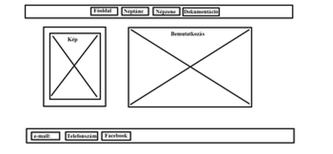
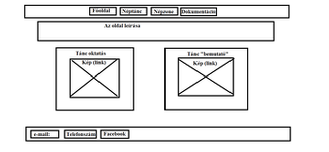
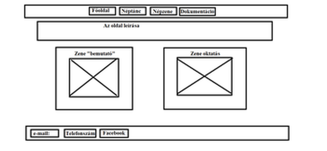

A PORTFÓLIÓ TERVE
Előzetesen az volt a célom, hogy egy olyan portfóliót hozzak létre, mely könnyen átlátható, felhasználóbarát, egyszerű legyen, és hogy minden eszközön jól mutasson. Első lépésként kitaláltam, hogy mivel töltsem meg a portfólióm és felvettem hozzá az anyagokat. Ezután elkészítettem az oldalak drótvázait, melyek itt láthatók:



Az eredeti tervektől annyiban tértem el, hogy megtetszett az, hogy az egyes elemek sarkai le vannak kerekítve, ezért ezt így hagytam.
Az oldal témáján sokat rágódtam, először kéket szerettem volna, mivel az a kedvenc színem, de azzal nem mutatott jól. Ezután választottam ezt a barnább árnyalatot, melyet RGB kódok segítségével kevertem ki.
Amikor megkaptam a feladatot nehéznek tűnt, de a gyakorlati videók megtekintése után "könnyedén" sikerült elkészítenem a feladatot, egyedül a telefonos nézet megalkotása tartott kicsit tovább.
Az oldal készítése során a következő weboldalakat használtam fel:
-
www.w3schools.com
www.hexcolortool.com
www.meretezdat.hu